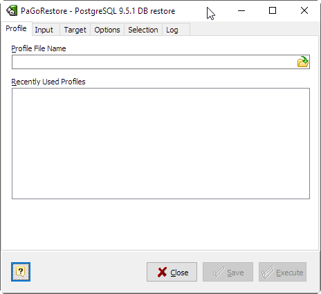
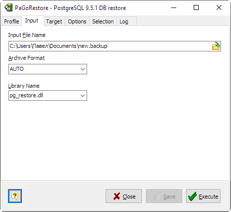
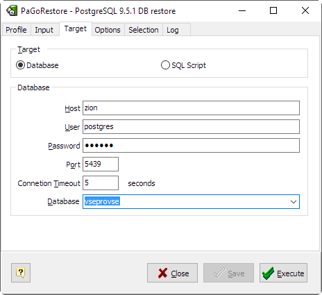
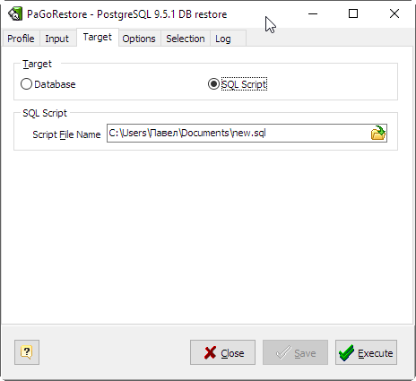
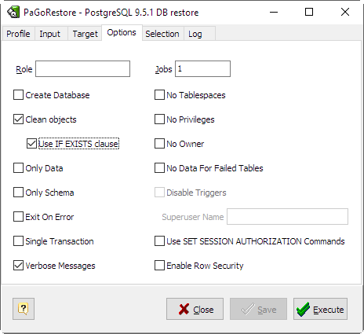
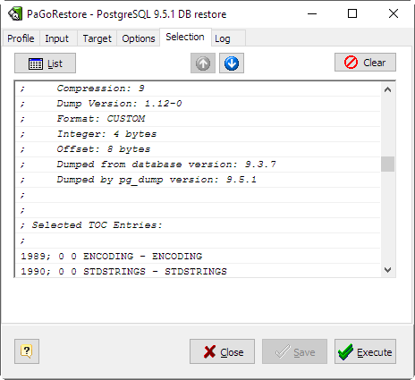
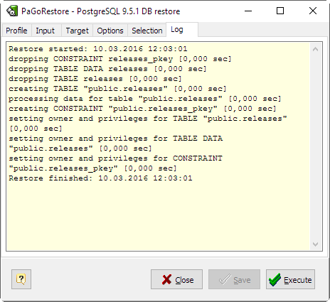

Name
PaGoRestore — restore a PostgreSQL database from an archive created by pg_dump or Microolap PaGoDump in one of the non-plain-text formats..
Description
PaGoRestore is a GUI Windows utility for restoring a PostgreSQL database from an archive built with pg_dump or PaGoDump. Utility itself built with Microolap PostgresDAC. It will issue the commands necessary to reconstruct the database to the state it was in at the time it was saved. The archive files also allow PaGoRestore to be selective about what is restored, or even to reorder the items prior to being restored. The archive files are designed to be portable across architectures.
PaGoRestore can operate in two modes. If a database is specified as target, the archive is restored directly into the database. Otherwise, a script containing the SQL commands necessary to rebuild the database is created and written to a file. The script output is equivalent to the plain text output format of PaGoDump and pg_dump. Some of the options controlling the output are therefore analogous to PaGoDump and pg_dump options.
Obviously, PaGoRestore cannot restore information that is not present in the archive file. For instance, if the archive was made using the “dump data as INSERT commands” option, PaGoRestore will not be able to load the data using COPY statements.
While running PaGoRestore, one should examine the output for any warnings (Log tab), especially in light of the limitations listed below.

- Profile File Name
- Enter here existing profile file name to open previously saved options or new name to have Save functionality enabled.
- Recently Used Profiles
- Double-click to open one of recently used profiles.

- Input File Name
- Specifies the location of the archive file to be restored
- Archive Format
- Specify format of the archive. Can be one of the following:
| TAR | - |
The archive is a tar archive. Using this archive format allows reordering and/or exclusion of schema elements at the time the database is restored. It is also possible to limit which data is reloaded at restore time. |
| COMPRESS | - |
The archive is the custom format of pg_dump and PaGoDump. This is the most flexible format in that it allows reordering of data load as well as schema elements. This format is also compressed by default. |

- Host
- Specifies the host name of the machine on which the server is running.
- Username
- User name to connect as.
- Password
- Specifies a password for the connection.
- Port
- Specifies the TCP port on which the server is listening for connections. Defaults to the PGPORT environment variable, if set, or a compiled-in default.
- Connection Timeout
- Specifies amount of time to attempt a connection in seconds.
- Database Name
- Specifies the name of the database to be dumped.

- Script File Name
- Specify output file for generated script.
Library NameSpecifies the name of the dump library to be used.
-->

- Role Name
- Specifies a role name to be used to perform the restore. This option causes PaGoRestore to issue a SET ROLE rolename command after connecting to the database. It is useful when the authenticated user lacks privileges needed by PaGoRestore, but can switch to a role with the required rights. Some installations have a policy against logging in directly as a superuser, and use of this option allows restores to be performed without violating the policy.
- Create Database
- Create the database before restoring into it. When this option is used, the database named in Connection Options is used only to issue the initial CREATE DATABASE command. All data is restored into the database name that appears in the archive.
- Clean Objects
- Clean (drop) database objects before recreating them.
- Use IF EXISTS clause
- Use conditional commands (i.e. add an IF EXISTS clause) when cleaning database objects. This option is not valid unless Clean Objects is also specified.
- Only Data
- Restore only the data, not the schema (data definitions).
- Only Schema
- Restore only the schema (data definitions), not the data (table contents). Sequence current values will not be restored, either.
- Exit On Error
- Exit if an error is encountered while sending SQL commands to the database. The default is to continue and to display a count of errors at the end of the restoration.
- Single Transaction
- Execute the restore as a single transaction (that is, wrap the emitted commands in BEGIN/COMMIT). This ensures that either all the commands complete successfully, or no changes are applied. This option implies "Exit On Error".
- No Priveleges
- Prevent dumping of access privileges (grant/revoke commands).
- Verbose Messages
- Specifies verbose mode. This will cause PaGoRestore to output detailed information including start/stop times, and progress messages to Log tab.
- Jobs
- Run the most time-consuming parts of restore — those which load data, create indexes, or create constraints — using multiple concurrent jobs. This option can dramatically reduce the time to restore a large database to a server running on a multi-processor machine.
Each job is one process or one thread, depending on the operating system, and uses a separate connection to the server.
The optimal value for this option depends on the hardware setup of the server, of the client, and of the network. Factors include the number of CPU cores and the disk setup. A good place to start is the number of CPU cores on the server, but values larger than that can also lead to faster restore times in many cases. Of course, values that are too high will lead to decreasing performance because of thrashing.
Only the custom archive (COMPRESS) format is supported with this option. This option is ignored when emitting a script rather than connecting directly to a database server. Also, multiple jobs cannot be used together with the option "Single Transaction".
- No Tablespaces
- Do not output commands to select tablespaces. With this option, all objects will be created in whichever tablespace is the default during restore.
- No Privileges
- Prevent restoration of access privileges (GRANT/REVOKE commands).
- No Owner
- Do not output commands to set ownership of objects to match the original database. By default, PaGoRestore issues ALTER OWNER or SET SESSION AUTHORIZATION statements to set ownership of created schema elements. These statements will fail unless the initial connection to the database is made by a superuser (or the same user that owns all of the objects in the script). With this option, any user name can be used for the initial connection, and this user will own all the created objects.
- No Data For Failed Tables
- By default, table data is restored even if the creation command for the table failed (e.g., because it already exists). With this option, data for such a table is skipped. This behavior is useful if the target database already contains the desired table contents. For example, auxiliary tables for PostgreSQL extensions such as PostGIS might already be loaded in the target database; specifying this option prevents duplicate or obsolete data from being loaded into them.
This option is effective only when restoring directly into a database, not when producing SQL script output.
- Disable Triggers
- This option is only relevant when performing a data-only restore. It instructs PaGoRestore to execute commands to temporarily disable triggers on the target tables while the data is reloaded. Use this if you have referential integrity checks or other triggers on the tables that you do not want to invoke during data reload.
Presently, the commands emitted for this option must be done as superuser. So, you should also specify a superuser name, or preferably run PaGoRestore as a PostgreSQL superuser.
- Superuser Name
- Specify the superuser user name to use when disabling triggers. This is only relevant if "Disable Triggers" option is used.
- Use SET SESSION AUTHORIZATION
- Output SQL-standard SET SESSION AUTHORIZATION commands instead of ALTER OWNER commands to determine object ownership. This makes the dump more standards compatible, but depending on the history of the objects in the dump, might not restore properly.
- Enable Row Security
- This option is relevant only when restoring the contents of a table which has row security. By default, application will set row_security to off, to ensure that all data is restored in to the table. If the user does not have sufficient privileges to bypass row security, then an error is thrown. This parameter instructs PaGoRestore to set row_security to on instead, allowing the user to attempt to restore the contents of the table with row security enabled. This might still fail if the user does not have the right to insert the rows from the dump into the table.
Note that this option currently also requires the dump be in INSERT format, as COPY TO does not support row security.

On this tab you can specify what objects to be included or excluded from the restore.

When a direct database connection is specified, PaGoRestore internally executes SQL statements. If you have problems running PaGoRestore, make sure you are able to select information from the database using, for example, psql.
If your database cluster has any local additions to the template1 database, be careful to restore the output of PaGoRestore into a truly empty database; otherwise you are likely to get errors due to duplicate definitions of the added objects. To make an empty database without any local additions, copy from template0 not template1, for example:
CREATE DATABASE foo WITH TEMPLATE template0;
The limitations of PaGoRestore are detailed below.
- When restoring data to a pre-existing table and the option "Disable Triggers" is used, PaGoRestore emits commands to disable triggers on user tables before inserting the data then emits commands to re-enable them after the data has been inserted. If the restore is stopped in the middle, the system catalogs might be left in the wrong state.
- PaGoRestore cannot restore large objects selectively, for instance only those for a specific table. If an archive contains large objects, then all large objects will be restored, or none of them if they are excluded via -L, -t, or other options.
Once restored, it is wise to run ANALYZE on each restored table so the optimizer has useful statistics.
Disclaimer: for obvious reasons this document is based on the original PostgreSQL pg_dump documentation. Microolap Technologies don't pretend to be the author of the text above.